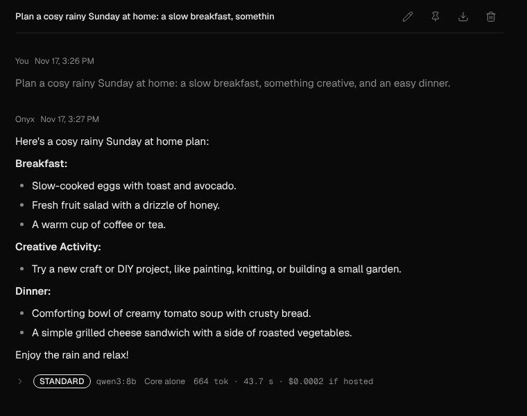

By GK Labs · Free and open source
Your own AI team, on your own PC.
Onyx Agents is six AI agents that work together on your computer. They run on open Qwen models through Ollama. There is no subscription, and your chats stay on your machine.
Windows PC · best with a graphics card · Setup installs the rest
Inside
Six agents. One answer.
- Every message goes to Onyx Core.
It answers quick things itself, and plans the rest.
- It hands the parts to five specialists.
Researcher, Coder, Scheduler, Messenger and Memory work at the same time.
- Then it writes one answer.
You get one reply. Every step it took is in the agent graph.
Specs
Read the label.
Everything in the box, measured the way the app measures it. Every answer shows the tokens it took and what it would have cost on a paid host. On your PC it costs nothing.
Spec Facts
Serving size1 PC
- Agents
- 6
- Subscription
- $0
- Charge per message
- $0
- Cloud models in use
- 0*
ModelsQwen3 4B · 8B · 14B · 30B
Runs onWindows, best with a graphics card
Reach it fromthe app · your phone · WhatsApp · SMS
Models to downloadabout 40 GB on a 16 GB card
LicenseMIT
Local
It runs on your PC.
Every model runs on your own graphics card through Ollama. Setup reads your card and memory, then picks a Qwen3 model for each tier: Lite, Standard, Pro and Max.
Your chats, files and memories stay on your PC. Nothing goes to a cloud model unless you turn one on.
A real run, from the trailer
- you
- Remind me to call Sam tomorrow at 9am, and remember that I take my coffee black.
- Onyx Core
- hands it to Scheduler and Memory
- Scheduler
- schedule_create · Call Sam, tomorrow 9:00 AM
- Memory
- memory_save · prefers coffee black
- answer
- Your reminder to call Sam has been set for tomorrow at 9:00 AM. I've also noted that you prefer coffee black.
3 agents · 3,436 tokens · $0 · $0.0008 if hosted

The team
Meet the six.
Each one is a piece of the stone. Onyx Core sits in the middle and decides who does what.
- Onyx CoreStandard
Receives every message. Answers directly or plans and delegates.
- ResearcherPro
Searches the web, reads pages, cites sources.
- CoderPro
Writes code, runs it in a sandbox, returns the output.
- SchedulerStandard
Creates reminders and timed or repeating tasks.
- MessengerLite
Formats a reply for the channel it goes out on.
- MemoryLite
Keeps and recalls long-term facts about you.
Free
Free and open source.
Onyx Agents is MIT-licensed, with no subscription and no charge per message. It updates itself from GitHub, and your password, keys, chats and settings stay put.
Claude and ChatGPT, if you want them
Add your own Anthropic or OpenAI key in Settings and pick a cloud model for any message. Each company bills your account, every answer shows its cost, and a daily limit stops cloud calls once it is reached ($5 to start).
- Claude Opus 5.5
- Claude Sonnet 5.5
- Claude Haiku 5.5
- GPT-6.2 Astra
- GPT-6.2 Sol
Windows
Get it running.
Extract the ZIP. Any folder will do.
Open the agents folder and double-click Setup Onyx. It installs what is missing, picks models for your graphics card and downloads them. That is about 40 GB on a 16 GB card, and it is safe to stop and run again.
Double-click the Onyx shortcut. Onyx opens in your browser at 127.0.0.1:8787 and keeps itself up to date.
macOS or Linux: the same steps by hand, in the README. Nothing to install: try Onyx 3 in your browser.